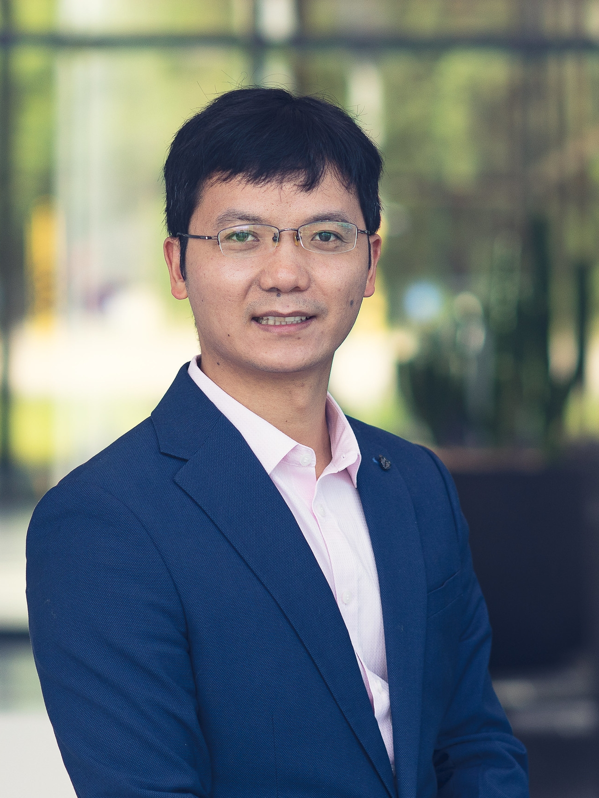

Agenda
Date: 16th September 2025
Time: 8:50 - 12:30
Venue: Hong Kong Science Park 17w 2F Multifunction Room 2
Prof. Sung-Kyu Lim (University of Southern California)
AI-Driven Design Automation for Multi-Chip Integration in AI ChipsAbstract: Multi-chip integration has become a standard approach in AI training and is rapidly gaining traction in edge learning applications. Leveraging 2.5D and 3D IC architecture enables substantial improvements in energy efficiency and latency by optimizing inter chip data transfer. At the core of this transformation lies the automation of design and simulation for heterogeneous AI chips, shifting from manual engineering to algorithm driven methodologies. This evolution is being accelerated by advanced electronic design automation (EDA) tools powered by AI. My research group develops novel AI driven algorithms that enhance or replace traditional design automation techniques, with a focus on enabling next generation heterogeneous AI systems. In this talk, I will present our recent innovations and explore the critical challenges that lie ahead in applying AI algorithms to EDA for high performance AI chip design.
Prof. Dragomir Milojevic (Université libre de Bruxelles)
Design Flows & Thermal Exploration for STCO in multi-die 3D-ICs: from tools to systemsAbstract: In this talk we will discuss design flows for multi-die 3D-ICs with System Technology Co-Optimization (STCO) paradigm in mind. Different flow steps will be covered in detail, starting from the system level architecture tunning, application-level assessment of the architectural knobs (using kernels & workloads) to place & route (layout generation), power & thermal analysis. In the second part of the presentation, the above flows will be used to demonstrate their practical application on concrete systems to analyse trade-offs that different choices at architecture, partitioning, technology and other levels imply for performance, power, area and thermal aspects of the circuit. Finally, we will look into the future development of the EDA flows as required by the CMOS2.0 technology paradigm.
10:30-11:00 • 30-minute Break

Prof. Zheng Zhang (University of California, Santa Barbara)
Physics-constrained Operator Learning for Modeling and Optimization of Thermal Effects in Chip DesignAbstract: Thermal simulation plays a critical role in the design of 3D integrated circuits (3D-ICs), where accurate and efficient temperature predictions are essential to ensure component reliability and performance. Recently, deep learning methods have shown great potential in accelerating these simulations, but their applications in chip design analysis and optimization are limited by some challenges such as (1) lack of data, (2) long training time, (3) lack of trustworthiness. In this talk, we will present our work of DeepOHeat and its successor to (partially) address these challenges. Our key ideas include (1) data-free physics-constrained operator learning for solution prediction under varying PDE configurations, (2) efficiency and accuracy improvement via low-rank tensor functional representation and Kolmogorov-Arnold networks, (3) fast and trustworthy thermal design optimization via a hybrid framework that integrates operator learning with non-AI solvers (e.g. finite-element methods).

Prof. Rongmei Chen (Peking University)
PPA and Power & Thermal Integrity Analysis of 2D and 3D IC CPUs based on Advanced BSPDNsAbstract: This talk talks about recent advancements of BSPDN technologies from industries, including Intel, TSMC, IMEC, IBM and Samsung. Application of BSPDNs for CPU power integrity and PPA improvement is introduced with in-depth physical explanations and chip design analysis provided. The negative impact of thermal integrity on 2D and 3D CPU chips thanks to BSPDN technology or process is also quantitatively evaluated and studied. Before the end, DCTO opportunities for trading off chip PPA and power & thermal integrity is explored for future BSPDN application to high-end CPU design and manufacture.